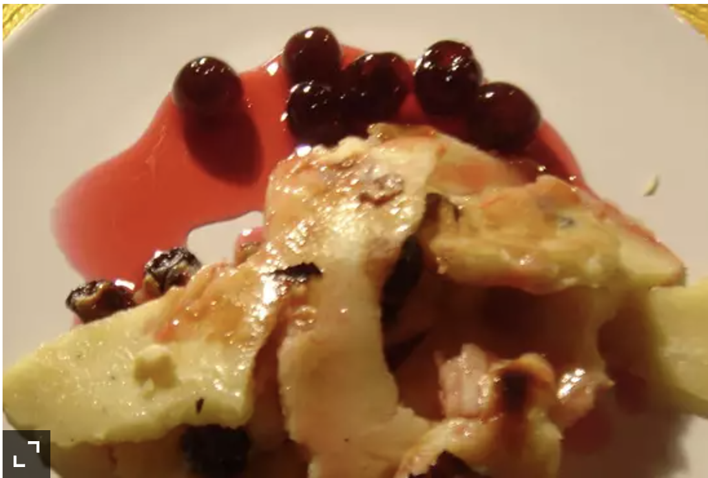

Kaiserschmarrn

Kaiserschmarrn is a traditional Austrian dessert. It is a caramelized pancake made with rum-soaked raisins, eggs, flour, sugar, and butter. The pancake is split into pieces while frying, sprinkled with powdered sugar, and served hot with plum sauce on the side or on top.
Ingredients
- ¼ cup raisins
- ¼ cup rum
- 1 cup whole milk
- 5 eggs
- ¼ cup white sugar
- ½ teaspoon vanilla extract
- salt
- 1 cup all-purpose flour
- 2 tablespoons butter
- 1 tablespoon butter, melted
- ¼ cup confectioners' sugar, plus more for dusting
- plum preserves for serving
- In a small bowl, combine raisins with rum and let soak 30 minutes then drain.
- In a medium mixing bowl, beat together the milk, eggs, white sugar, vanilla, and salt. Gradually whisk in the flour to make a smooth batter. Stir in the drained raisins.
- In a large skillet melt 2 tablespoons butter over medium heat. Pour the batter into the skillet and cook 5 to 6 minutes, or until the pancake has set and the bottom is golden brown. Turn over the pancake and cook 3 minutes, or until this side is also golden brown. Using a spatula or two forks, tear the pancake into bite-size pieces. Drizzle in the melted butter and sprinkle with confectioners' sugar. Turn up the heat to medium high and use a spatula to gently toss the pieces for 5 minutes, or until the sugar has caramelized. Sprinkle with additional confectioners' sugar and serve with plum preserves.
To main page